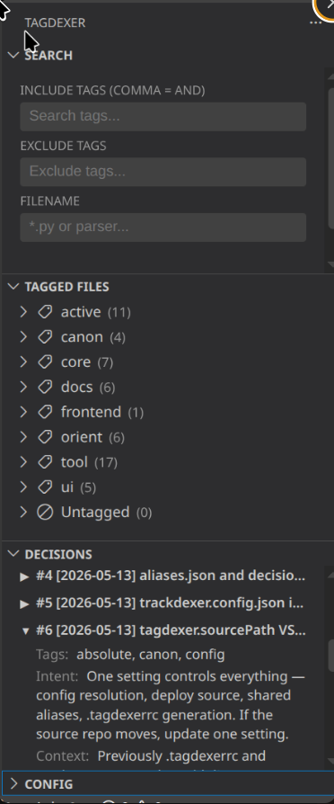

Two questions cost more time than almost anything else in an unfamiliar codebase: where is the code that does this? and why on earth was it built this way? Neither is answered by the file tree, and neither survives in anyone's head for long. tagdexer is two small command-line tools that answer one each — and, because they share a vocabulary, answer them together.
The tag index — finding the code
Directory structure encodes one way of slicing a project, chosen early and rarely revisited. But the thing you actually want is usually a role: everything that writes to the database, everything still live, everything touching the network. Those files are scattered across folders, and grepping for them means guessing the words their authors happened to use.
tagdexer labels files by what they do. A tag goes in a
header comment, or — for JSON, images and folders that can't carry
comments — in a companion .tags file:
# @tagdex: recorder, online, active
The indexer scans the repo, resolves aliases so db,
.db and sqlite all collapse to the canonical
database, and writes one .tagindex.json at the
root. Searches then take include and exclude terms together:
node tagdexer/indexer.js --search "database,active,-deprecated"That asks a question the directory tree can't: everything that touches the database and is still in service, minus what's already on its way out. No file has to move for its tags to change, so the index tracks how you actually think about the code rather than how it was once filed.
The decision log — keeping the reasoning
Finding the code is only half the problem. The expensive knowledge is the part that never makes it into the repo: the approach that was tried and abandoned, the constraint that isn't obvious from any single file, the reason a sensible-looking refactor will break something three modules away. Commit messages record what changed. They rarely record what was rejected, or why.
tracker.js is an append-only decision log for exactly that.
Entries are schema-validated, so they can't be vague — a decision needs
an intent (why it matters), a context
(how it was reached), tags, and the files it affects. Entries can record
alternatives rejected, constraints discovered, and consequences, and can
supersede earlier entries without deleting them.
node tagdexer/tracker.js --add --type finding \
--decision "Vendor VIN does not encode drivetrain" \
--intent "Determine if VIN can backfill missing drivetrain" \
--context "Checked against the NHTSA vPIC schema" \
--tags "vin,drivetrain"The test for whether something is worth logging is simple: if you walked away right now, would the next person have to rediscover what you already know? Routine refactors and dependency bumps fail that test. A dead end you spent two days in passes it easily — and a dead end is precisely the kind of thing that never gets written down anywhere else.
Why they belong together
The two halves share one vocabulary. Decision entries are tagged with the same canonical tags as files, resolved through the same aliases — so a tag is not just a label on a file, it is a thread running through the repo's history.
# what runs
node tagdexer/indexer.js --search "database,active"
# why it runs that way
node tagdexer/tracker.js --search --tag databaseAsk the first question and you get the code as it stands. Ask the second and you get the arguments that produced it, including the options that were considered and dropped. Kept separately, an index goes stale and a decision log goes unread; sharing a vocabulary, each one gives you a way into the other.
Both are plain CLI tools, so this works the same whether the reader is a new engineer, you in six months, or an AI coding agent that has no memory of the last session at all. The optional VSCodium sidebar puts the same search, tag editing and decision browsing in a panel for people who prefer to click.

Requirements
- Node.js 22 or newer
- ripgrep on your
PATH - VSCodium or VS Code 1.85+ — only for the optional sidebar